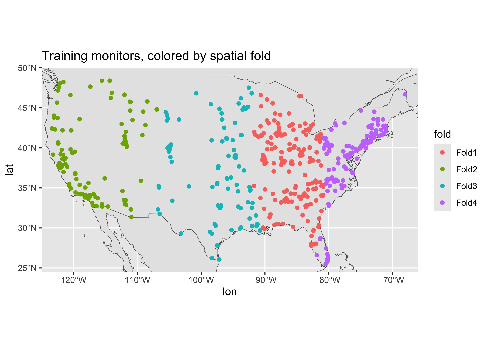
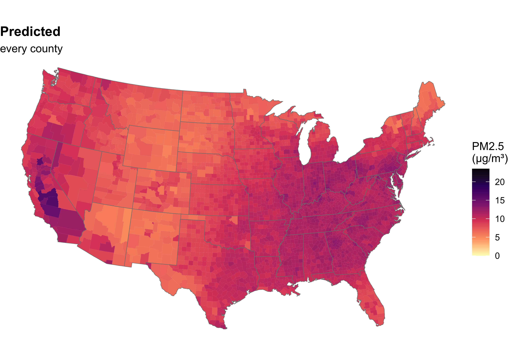
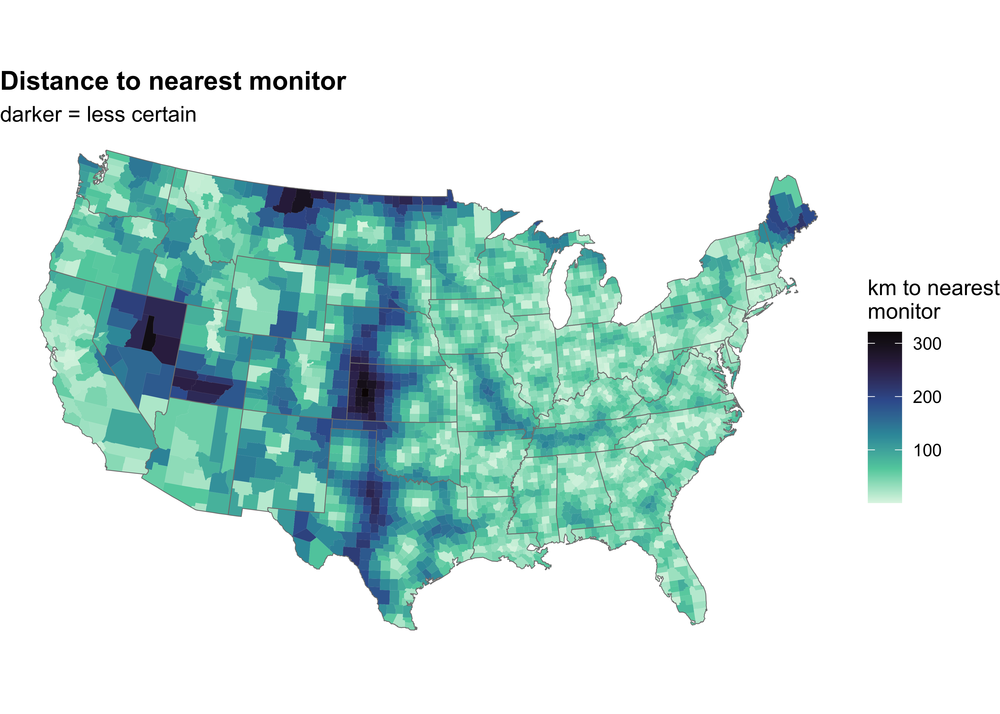
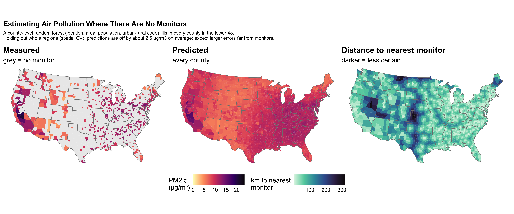

# in your CS02 repo, the file is at "data/pm25_data.csv"
pm <- read_csv("OCS_data/data/raw/pm25_data.csv") |>
mutate(across(c(id, fips, zcta), as.factor),
city = case_when(city == "Not in a city" ~ "Not in a city",
city != "Not in a city" ~ "In a city"))
set.seed(1234)
pm_split <- initial_split(pm, prop = 2/3)
train_pm <- training(pm_split)
rf_rec <- recipe(train_pm) |>
update_role(everything(), new_role = "predictor") |>
update_role(value, new_role = "outcome") |>
update_role(id, new_role = "id variable") |>
update_role("fips", new_role = "county id") |>
step_rm(county, zcta) |>
step_novel(state) |>
step_string2factor(city) |>
step_nzv(all_predictors()) |>
step_corr(all_numeric_predictors())
rf_wflow <- workflow() |>
add_recipe(rf_rec) |>
add_model(rand_forest(mtry = 10, min_n = 3) |>
set_engine("randomForest") |>
set_mode("regression"))
# outline of the world, for maps
world <- rnaturalearth::ne_countries(scale = "medium", returnclass = "sf")15-putting-it-together
Putting the Model Together
Q&A
Q:
A:
Course Announcements
Due Dates:
- ⌨️ Lab 07 due Fri 11/20 (11:59 PM)
- 💻 CS02 & 🔘 CS02 team eval survey due Sun 11/22 (11:59 PM)
- 📄 Final Project rough draft (qmd + HTML in your final project repo) due Sun 11/22 (11:59 PM)
- 🔘 Lecture Participation survey “due” after class
Progress Check-in
❓ Where should you and your group be for CSO2 completion?
. . .
❓ Where should you be at right now for your final project? What should you have done for rough draft on Monday?
Agenda
- The whole pipeline, on one slide
- A second pass through it, on a new question: can we fill in the map?
- Common pitfalls
- Mapping it onto your CS02 report
Why today?
Last time students told us:
“We did the whole recipe lecture in one lecture…a little bit confusing.”
. . .
So today: (almost) no new functions. Just the order things happen in, and why…applied to a question we haven’t answered yet.
The pipeline
One slide
| Step | Question it answers | tidymodels |
|---|---|---|
| 1. Split | What data do I never peek at until the end? | initial_split(), training(), testing() |
| 2. Recipe | What are my outcome, predictors, and pre-processing steps? | recipe(), update_role(), step_*() |
| 3. Model | What kind of model, which engine, which mode? | linear_reg(), rand_forest(), set_engine(), set_mode() |
| 4. Workflow | Recipe + model, bundled together | workflow(), add_recipe(), add_model() |
| 5. Resample | How well does each candidate model do on data it wasn’t fit on…and which kind of new data? | vfold_cv() or clustering_cv(), fit_resamples(), collect_metrics() |
| 6. Final fit | How does my chosen model do on the test set (once!)? | last_fit(), collect_metrics() |
| 7. Interpret | What does this mean for my question? | collect_predictions(), vip::vip(), a plot + a sentence |
🧠 Before we code: where have we already done each of these steps?
Where we left off Monday
Monday’s monitor-level random forest, condensed (full pipeline in the Appendix):
🧠 Which pipeline steps does this chunk cover?
Second pass: filling in the map
The question
In the intro, our goal was estimates everywhere. But Monday’s maps only colored in counties with a monitor.
n_monitor_counties <- n_distinct(pm$fips)
n_monitor_counties[1] 569That’s 569 of the ~3,100 counties in the lower 48.
. . .
❓ What would we need in order to predict PM2.5 for a county with no monitor?
. . .
- An honest estimate of how well we do in places far from any monitor
- Predictors that we have for every county (not just at monitors)
Resample: random splits can flatter us
On Monday, our test set and CV folds assigned monitors to train/test at random. But monitors cluster in cities:
monitor_pts <- pm |>
sf::st_as_sf(coords = c("lon", "lat"), crs = 4326, remove = FALSE) |>
sf::st_transform(5070) # an equal-area map projection of the US (units = meters)
# distance (km) from each monitor to its nearest *other* monitor
monitor_dists <- unclass(sf::st_distance(monitor_pts)) / 1000
diag(monitor_dists) <- NA
nearest_km <- apply(monitor_dists, 1, min, na.rm = TRUE)
median(nearest_km)[1] 18.61733- Half of all monitors are within 19 km of another monitor
- So a “held-out” monitor usually has a neighbor in the training data…and neighbors tend to have similar PM2.5
- That’s a fair test for predicting a new monitor somewhere we already monitor, but too easy a test for a county with no monitors nearby
Resample: spatial cross-validation
Instead of random folds, hold out whole regions:
set.seed(1234)
spatial_folds_pm <- rsample::clustering_cv(train_pm, vars = c(lat, lon), v = 4)
spatial_folds_pm# 4-cluster cross-validation
# A tibble: 4 × 2
splits id
<list> <chr>
1 <split [373/211]> Fold1
2 <split [469/115]> Fold2
3 <split [480/104]> Fold3
4 <split [430/154]> Fold4clustering_cv()uses k-means clustering onlatandlon, so nearby monitors land in the same fold- Each fold is assessed by a model that never saw any monitor from that region
- The
spatialsamplepackage has more options (e.g., buffers around each held-out area), but it needssfdata
Resample: spatial folds
fold_map <- map2(spatial_folds_pm$splits, spatial_folds_pm$id,
\(split, fold_id) assessment(split) |> mutate(fold = fold_id)) |>
list_rbind()
ggplot(data = world) +
geom_sf() +
coord_sf(xlim = c(-125, -66), ylim = c(24.5, 50), expand = FALSE) +
geom_point(data = fold_map, aes(x = lon, y = lat, color = fold), size = 1.5) +
ggtitle("Training monitors, colored by spatial fold")
Resample: random vs. spatial CV
Same random forest (rf_wflow), two kinds of folds:
set.seed(1234)
random_folds_pm <- vfold_cv(train_pm, v = 4)
set.seed(456)
random_RF_fit <- fit_resamples(rf_wflow, random_folds_pm)
set.seed(456)
spatial_RF_fit <- fit_resamples(rf_wflow, spatial_folds_pm)
# baseline: predict every held-out value with the mean of the training folds
null_cv_rmse <- function(folds) {
map_dbl(folds$splits, \(split) {
yardstick::rmse_vec(assessment(split)$value,
rep(mean(analysis(split)$value), nrow(assessment(split))))
}) |>
mean()
}
get_rmse <- function(fit) {
collect_metrics(fit) |> filter(.metric == "rmse") |> pull(mean)
}
cv_compare <- tibble(
folds = c("random (vfold_cv)", "spatial (clustering_cv)", "spatial: just predict the mean"),
rmse = c(get_rmse(random_RF_fit),
get_rmse(spatial_RF_fit),
null_cv_rmse(spatial_folds_pm))
)
cv_compare# A tibble: 3 × 2
folds rmse
<chr> <dbl>
1 random (vfold_cv) 1.67
2 spatial (clustering_cv) 2.38
3 spatial: just predict the mean 2.71❓ Why is the spatial CV error bigger? Which predictors might stop helping when a whole region is held out? (Hint: think about state.)
Data: features we have everywhere
Our monitor-level model leans on features measured at each monitor: CMAQ and aod at that spot, roads/emissions/impervious surface within a radius of the monitor, and demographics of the monitor’s ZCTA. We don’t have those for a county with no monitor.
. . .
So we’ll build a simpler county-level model, using only features we have for every county:
| Feature | Source |
|---|---|
lat, lon (a point inside the county) |
county shapes (maps) |
area_km2 (county area) |
county shapes (maps) |
pop_2012 (population, July 2012) and urc2013 (urban-rural code) |
NCHS Urban-Rural Classification Scheme data file |
popdens (people per km2) |
pop_2012 / area_km2 |
. . .
# one row per county in the lower 48 (+ DC)
county_features <- read_csv("OCS_data/data/raw/county_features.csv",
col_types = cols(fips = col_character()))
glimpse(county_features)Rows: 3,109
Columns: 5
$ fips <chr> "01001", "01003", "01005", "01007", "01009", "01011", "01013"…
$ state <chr> "AL", "AL", "AL", "AL", "AL", "AL", "AL", "AL", "AL", "AL", "…
$ county <chr> "Autauga County", "Baldwin County", "Barbour County", "Bibb C…
$ urc2013 <dbl> 3, 4, 6, 2, 2, 6, 6, 4, 5, 6, 2, 6, 6, 6, 6, 5, 4, 6, 5, 6, 6…
$ pop_2012 <dbl> 55514, 190790, 27201, 22597, 57826, 10474, 20307, 117296, 340…Note: the county-level columns in pm25_data.csv don’t always match the official files (e.g., Cook County, IL has urc2013 = 2, but NCHS codes it 1, “large central metro”). Taking every county’s features from one source keeps training and prediction consistent.
Data: county shapes → county features
# county.fips links each maps county name ("state,county") to its FIPS code
county_fips <- maps::county.fips |>
# sf merges counties drawn in pieces ("washington,pierce:main"), so drop the ":piece"
mutate(polyname = str_remove(as.character(polyname), ":.*")) |>
distinct() |>
# renamed from Shannon County (46113) in 2015; NCHS 2013 still uses 46113
add_row(fips = 46113, polyname = "south dakota,oglala lakota")
county_shapes <- sf::st_as_sf(maps::map("county", plot = FALSE, fill = TRUE)) |>
left_join(county_fips, by = c("ID" = "polyname")) |>
filter(!is.na(fips)) |>
mutate(fips = sprintf("%05d", as.integer(fips))) |>
sf::st_transform(5070) |> # equal-area projection (meters), so areas are accurate
sf::st_make_valid() |>
group_by(fips) |>
summarize() # one shape per county (a few have two names in maps)
# a point guaranteed to fall inside each county
county_points <- sf::st_point_on_surface(county_shapes)
county_lonlat <- county_points |> sf::st_transform(4326) |> sf::st_coordinates()
# which monitor is closest to each county?
nearest_monitor <- sf::st_nearest_feature(county_points, monitor_pts)
county_data <- tibble(
fips = county_shapes$fips,
lon = county_lonlat[, "X"],
lat = county_lonlat[, "Y"],
area_km2 = as.numeric(sf::st_area(county_shapes)) / 1e6,
dist_km = as.numeric(sf::st_distance(county_points, monitor_pts[nearest_monitor, ],
by_element = TRUE)) / 1000
) |>
inner_join(county_features, by = "fips") |>
mutate(popdens = pop_2012 / area_km2)
county_data# A tibble: 3,075 × 10
fips lon lat area_km2 dist_km state county urc2013 pop_2012 popdens
<chr> <dbl> <dbl> <dbl> <dbl> <chr> <chr> <dbl> <dbl> <dbl>
1 01001 -86.7 32.5 1489. 36.3 AL Autauga Co… 3 55514 37.3
2 01003 -87.7 30.8 4108. 31.6 AL Baldwin Co… 4 190790 46.4
3 01005 -85.4 31.9 2332. 71.3 AL Barbour Co… 6 27201 11.7
4 01007 -87.1 33.0 1543. 35.1 AL Bibb County 2 22597 14.6
5 01009 -86.5 34.0 1634. 37.7 AL Blount Cou… 2 57826 35.4
6 01011 -85.7 32.1 1615. 63.8 AL Bullock Co… 6 10474 6.49
7 01013 -86.7 31.8 1900. 81.5 AL Butler Cou… 6 20307 10.7
8 01015 -85.8 33.8 1545. 27.5 AL Calhoun Co… 4 117296 75.9
9 01017 -85.4 33.0 1498. 49.3 AL Chambers C… 5 34064 22.7
10 01019 -85.6 34.3 1568. 26.4 AL Cherokee C… 6 26021 16.6
# ℹ 3,065 more rowsdist_km(distance to the nearest monitor) is not a predictor; we’ll use it to show where predictions are least certain
Data: county-level outcome
county_pm <- pm |>
mutate(fips = sprintf("%05d", as.integer(as.character(fips)))) |>
group_by(fips) |>
summarize(value = mean(value), n_monitors = n())
county_train <- inner_join(county_data, county_pm, by = "fips")
nrow(county_train)[1] 566- Training data: one row per county with a monitor; outcome = average PM2.5 across that county’s monitors
- We’ll predict for all 3075 counties in
county_data
Model + workflow: two county-level models
county_RF <- rand_forest(trees = 500) |>
set_engine("randomForest") |>
set_mode("regression")
latlon_wflow <- workflow() |>
add_formula(value ~ lat + lon) |>
add_model(county_RF)
county_wflow <- workflow() |>
add_formula(value ~ lat + lon + area_km2 + pop_2012 + popdens + urc2013) |>
add_model(county_RF)latlon_wflow: location only (essentially smoothing between monitors)county_wflow: location + county featuresadd_formula()instead of a recipe: no pre-processing needed here
Resample: which model? Judged how?
set.seed(1234)
county_random_folds <- vfold_cv(county_train, v = 5)
set.seed(1234)
county_spatial_folds <- clustering_cv(county_train, vars = c(lat, lon), v = 5)
rmse_on <- function(wflow, folds) {
fit_resamples(wflow, folds) |>
collect_metrics() |>
filter(.metric == "rmse") |>
pull(mean)
}
set.seed(456)
county_cv <- tibble(
model = c("location only", "location + county features", "just predict the mean"),
random_cv = c(rmse_on(latlon_wflow, county_random_folds),
rmse_on(county_wflow, county_random_folds),
null_cv_rmse(county_random_folds)),
spatial_cv = c(rmse_on(latlon_wflow, county_spatial_folds),
rmse_on(county_wflow, county_spatial_folds),
null_cv_rmse(county_spatial_folds))
)
county_cv# A tibble: 3 × 3
model random_cv spatial_cv
<chr> <dbl> <dbl>
1 location only 1.61 2.71
2 location + county features 1.65 2.53
3 just predict the mean 2.40 2.71❓ Which model would you pick looking only at random CV? At spatial CV? Which column answers “how well can we predict a county with no monitor”?
Final fit: predict every county
county_fit <- fit(county_wflow, data = county_train)
county_preds <- county_data |>
bind_cols(predict(county_fit, new_data = county_data))
county_random_rmse <- county_cv |>
filter(model == "location + county features") |>
pull(random_cv)
spatial_rmse <- county_cv |>
filter(model == "location + county features") |>
pull(spatial_cv)- Fit on all counties with monitors, then predict all 3075 counties
- For a county far from monitors, expect errors of roughly 2.5 µg/m³ (spatial CV RMSE), not the 1.7 that random CV suggests
- Why no
initial_split()/last_fit()? The counties we most care about have no measurements to test against, so spatial CV is our error estimate (a bit optimistic, since we also used it to pick the model)
🧠 Which number belongs in your Results, and which in your Discussion of limitations?
Interpret: predictions everywhere
# shared styling for our PM2.5 maps
states <- sf::st_as_sf(maps::map("state", plot = FALSE, fill = TRUE))
pm_scale <- scale_fill_viridis_c(option = "magma", direction = -1,
limits = c(0, 23.5), na.value = "grey92",
name = "PM2.5\n(µg/m³)")
map_style <- list(
geom_sf(data = states, fill = NA, color = "grey50", linewidth = 0.2),
coord_sf(crs = 5070), # equal-area projection: the US looks like the US
theme_void(),
theme(plot.title = element_text(face = "bold"))
)
county_map <- left_join(county_shapes, county_preds, by = "fips")
pred_all <- ggplot() +
geom_sf(data = county_map, aes(fill = .pred), color = NA) +
pm_scale +
map_style +
ggtitle("Predicted", subtitle = "every county")
Interpret: where to trust it
dist_map <- ggplot() +
geom_sf(data = county_map, aes(fill = dist_km), color = NA) +
# a different palette than PM2.5, since this is a different quantity
scale_fill_viridis_c(option = "mako", direction = -1,
name = "km to nearest\nmonitor") +
map_style +
ggtitle("Distance to nearest monitor", subtitle = "darker = less certain")
- Darker counties are farther from any monitor: predictions there lean hardest on the model, and spatial CV only tells us the average error, so errors there are likely larger
❓ If you could add 50 new monitors, where would you put them?
Interpret: final plot
truth_all <- ggplot() +
geom_sf(data = left_join(county_shapes, county_pm, by = "fips"),
aes(fill = value), color = NA) +
pm_scale +
map_style +
ggtitle("Measured", subtitle = "grey = no monitor")
fill_plot <- (truth_all | pred_all | dist_map) +
plot_layout(guides = "collect") +
plot_annotation(title = "Estimating Air Pollution Where There Are No Monitors",
subtitle = paste0("A county-level random forest (location, area, population, urban-rural code) fills in every county in the lower 48.\nHolding out whole regions (spatial CV), predictions are off by about ", round(spatial_rmse, 1), " ug/m3 on average; expect larger errors far from monitors."),
theme = theme(plot.title = element_text(size = 12, face = "bold"),
plot.subtitle = element_text(size = 8))) &
theme(legend.position = "bottom")
❓ How would you describe what this model can and can’t tell us in your report?
Common pitfalls
- Pre-processing before splitting (data leakage): the test set “leaks” into your choices. (Fixed rules that learn nothing from the data, like recoding
city, are fine.) - Choosing a model with the test set: use cross-validation for that; the test set is for the end
- Reporting training performance as if it were test performance
- Forgetting
set.seed(): results change every time you render - New levels in new data (why we dropped
countyandzctaon Friday):step_novel()or rethink the variable - Resampling that doesn’t match the question: random folds answer “a new monitor near existing ones,” not “a county with no monitors” (that’s what spatial folds are for)
- RMSE without units or context: always interpret it in the units of the outcome
Your CS02 report
Where each step goes
| Pipeline step | Report section |
|---|---|
| Split, recipe | Data (wrangling) & Methods |
| Models, resampling | Analysis |
| Final fit | Results |
| Interpret | Results & Discussion (and limitations!) |
| Filling in the map / spatial CV | Discussion (limitations) or Extension |
Your Turn
With your CS02 group:
- Fill in the pipeline table for your analysis (including your extension)
- Which step does your extension change? (new data? new recipe step? new model?)
- Where are you currently stuck?
Put a green sticky on the front of your computer when you’re done. Put a pink if you want help/have a question.
Recap
- Can you list the steps of the modeling pipeline, in order, and say why that order matters?
- Can you explain the difference between a recipe, a model, and a workflow?
- Do you know which data (training vs. testing) to use when choosing vs. evaluating a model?
- Can you interpret RMSE in the context of the CS02 question?
- Can you explain when spatial CV is a better test than random CV?
Appendix: one pass, start to finish
About this appendix
The monitor-level pipeline from Friday and Monday, start to finish, in one place. For review on your own: we won’t walk through it in class.
1. Split
# in your CS02 repo, the file is at "data/pm25_data.csv"
pm <- read_csv("OCS_data/data/raw/pm25_data.csv") |>
mutate(across(c(id, fips, zcta), as.factor),
city = case_when(city == "Not in a city" ~ "Not in a city",
city != "Not in a city" ~ "In a city"))
set.seed(1234)
pm_split <- initial_split(pm, prop = 2/3)
train_pm <- training(pm_split)
test_pm <- testing(pm_split)Wrangling that doesn’t learn anything from the data (like recoding city) can happen before the split. Anything that learns from the data (correlations, variances, means) goes in the recipe.
2. Recipe
lm_rec <- recipe(train_pm) |>
update_role(everything(), new_role = "predictor") |>
update_role(value, new_role = "outcome") |>
update_role(id, new_role = "id variable") |>
update_role("fips", new_role = "county id") |>
step_rm(county, zcta) |>
step_dummy(state, city) |>
step_nzv(all_predictors()) |>
step_corr(all_numeric_predictors()) |>
step_lincomb(all_numeric_predictors()). . .
A recipe is a plan. Nothing has been computed yet (no prep()/bake() needed when we use a workflow).
3. Model(s)
We’ll compare two candidates:
lm_model <- linear_reg() |>
set_engine("lm") |>
set_mode("regression")
rf_model <- rand_forest(mtry = 10, min_n = 3) |>
set_engine("randomForest") |>
set_mode("regression"). . .
Random forest gets its own recipe (it can use categorical variables directly):
rf_rec <- recipe(train_pm) |>
update_role(everything(), new_role = "predictor") |>
update_role(value, new_role = "outcome") |>
update_role(id, new_role = "id variable") |>
update_role("fips", new_role = "county id") |>
step_rm(county, zcta) |>
step_novel(state) |>
step_string2factor(city) |>
step_nzv(all_predictors()) |>
step_corr(all_numeric_predictors())4. Workflows
lm_wflow <- workflow() |>
add_recipe(lm_rec) |>
add_model(lm_model)
rf_wflow <- workflow() |>
add_recipe(rf_rec) |>
add_model(rf_model). . .
🧠 Who can explain the difference between a recipe, a model, and a workflow…in one sentence each?
5. Resample to choose a model
set.seed(1234)
pm_folds <- vfold_cv(train_pm, v = 4)
lm_cv <- fit_resamples(lm_wflow, resamples = pm_folds)
rf_cv <- fit_resamples(rf_wflow, resamples = pm_folds)
bind_rows(
collect_metrics(lm_cv) |> mutate(model = "linear regression"),
collect_metrics(rf_cv) |> mutate(model = "random forest")
) |>
select(model, .metric, mean, std_err)# A tibble: 4 × 4
model .metric mean std_err
<chr> <chr> <dbl> <dbl>
1 linear regression rmse 2.12 0.0402
2 linear regression rsq 0.306 0.0253
3 random forest rmse 1.67 0.100
4 random forest rsq 0.592 0.0513. . .
We choose using cross-validation on the training data, not the test set.
6. Final fit: touch the test set once
rf_final <- last_fit(rf_wflow, split = pm_split)
collect_metrics(rf_final)# A tibble: 2 × 4
.metric .estimator .estimate .config
<chr> <chr> <dbl> <chr>
1 rmse standard 1.73 Preprocessor1_Model1
2 rsq standard 0.605 Preprocessor1_Model1. . .
last_fit() fits on all of the training data, then evaluates on the test data. Once.
7. Interpret
collect_predictions(rf_final) |>
ggplot(aes(x = value, y = .pred)) +
geom_point(alpha = 0.5) +
geom_abline(linetype = "dashed") +
labs(x = "Observed PM2.5 (µg/m³)", y = "Predicted PM2.5 (µg/m³)",
title = "Random forest predictions on held-out monitors") +
theme_minimal(base_size = 14)
7. Interpret (cont.)
test_rmse <- collect_metrics(rf_final) |>
filter(.metric == "rmse") |>
pull(.estimate)With what accuracy can we predict US annual average air pollution concentrations?
. . .
On monitors the model never saw, predictions were off by about 1.73 µg/m³ (RMSE), on a scale where values range from roughly 3 to 23 µg/m³.
. . .
🧠 Is that good? Good enough? For whom? (That’s the discussion section of your report.)